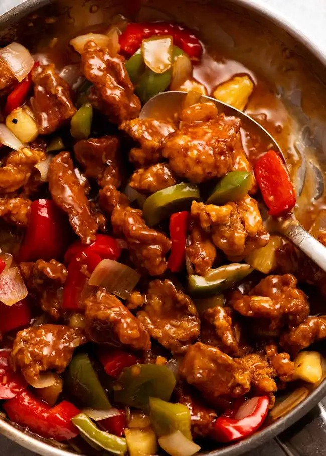

Sweet and Sour Pork

Description
One of the best sweet and sour pork recipes you'll ever have.
Ingredients
- 400 g pork butt/shoulder
- 1/2 onion
- 1 tsp garlic
- 1 tsp ginger
- 3/8 tsp baking soda
- 2 tsp cornflour
- 2 tbsp light soy sauce
For Frying
- 5 tbsp cornflour - to mix
- 1/2 cup cornflour - to coat
- 3 cups of vegetable/canola oil
Sweet & Sour Sauce
- 1/3 cup white sugar
- 1/3 cup apple cider vinegar
- 3 tbsp pineapple juice
- 3 tbsp ketchup
- 1/2 tsp Worcestershire sauce
- 1 tbsp soy sauce
- 1 tsp Oyster Sauce
- 4 tsp cornflour
- 1/2 cup water
Stir Frying
- 1 tbsp oil
- 1 garlic clove
- 2 tsp ginger
- 1 onion
- 1/2 red capsicum/ bell pepper
- 1/2 green capsicum/bell pepper
- 1 cup pineapple pieces
Steps
Marinade the Pork
- Mix the pork with marinade for 18-24 hrs.
Prep
- Preheat oven to 175oF and place rack on tray. Keeps the pork warm.
- Place all the sauce ingredients EXCEPT the water in a large jug. Mix it well, then add water.
- Have all the ingredients lined up, ready to toss in. Things will move quickly this way.
Double coating
- Mix 5 tablespoons cornflour into the pork and leave for 5 minutes. At first, it will be white from the cornflour, but after a while it will sweat and make the cornflour (mostly / partially) wet, and will be sticky (this is key for coating to stick).
- Spread 1/2 cup cornflour in a shallow bowl. Coat pork, shaking off excess, and pile onto a plate.
- Reserve cornflour in case you need to dust again just prior to frying. Pork should be at least half white when you put it into the oil (if not, just sprinkle with reserved cornflour).
Back to Back Frying
- Pour enough oil into a large saucepan or small pot so it's 2.5cm / 1" deep. Heat to 180°C/350°F (or until pork immediately starts sizzling when you dip it in).
- Cook pork in batches, being sure not to crowd the pot, for 3 minutes until golden. Drain on rack. This step is just to cook the pork. It takes me 4 batches.
- Turn the stove up slightly and heat oil to 200°C/390°F. Starting with the coolest pork, add half the pork (you can crowd the pot) and cook for 1 1/2 minutes, or until pork is deep golden brown and crispy. Transfer to rack, repeat with remaining pork - I do 2 batches.
- Keep warm in oven.
Sauce & Stir Fry
- Heat oil in a very large skillet over high heat.
- Add garlic, ginger and onion, stir for 1 1/2 minutes. Add capsicum and stir for 2 minutes.
- Add Sauce & pinapple, then let it come to a rapid simmer. Simmer for 2 minutes until it thickens - when you drag the spoon across the base, a path should briefly appear (see video at 1 min 53 s).
- 10 second toss: Add pork, then QUICKLY toss to coat - aim for 10 seconds!
- Serve asap! Pour onto serving plate, serve immediately! Will stay crispy for around 5 minutes then starts softening but still has a solid coating. This is just the reality of Sweet and Sour Pork, even at restaurants!